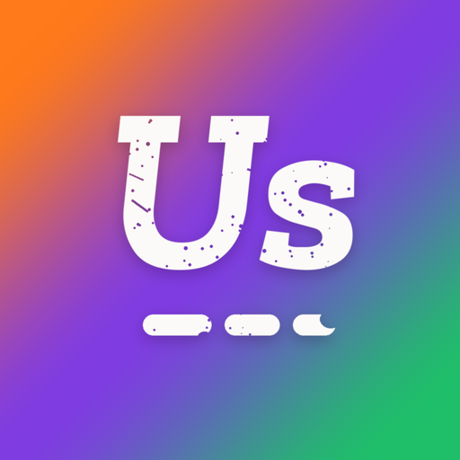

Abriendo USA…
Pulsa Compartir y luego "Añadir a pantalla de inicio". Desde ese icono se abrirá directamente tu artefacto de Claude.

Pulsa Compartir y luego "Añadir a pantalla de inicio". Desde ese icono se abrirá directamente tu artefacto de Claude.